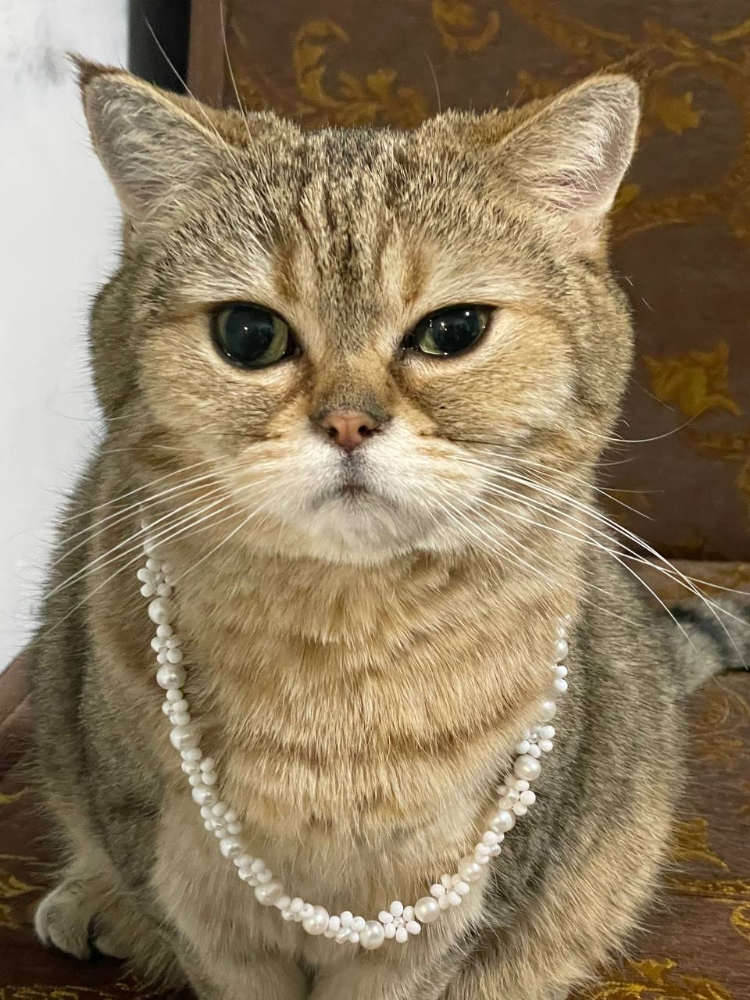
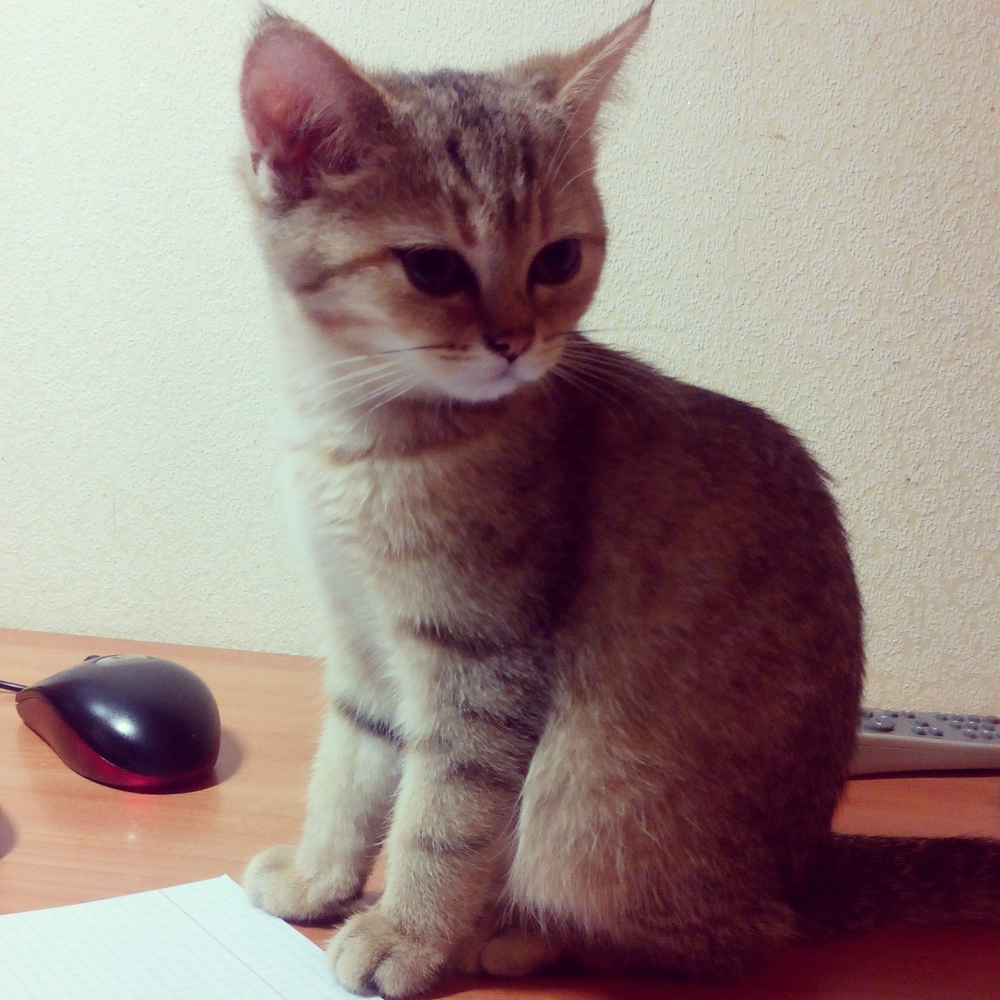

Порода у Мяуриццио - Шотландская золотая шиншилла
Мяуриццио любит:
Мяуриццио не любит:
Мяуриццио родился в приюте в 2013 году, после чего по счастливой случайности оказался в моем доме. Вся семья сразу же приняла и полюбила его. Вот таким малышом он был тогда:

С тех самых пор он стал неотъемлемой частью семьи, чему мы все, безусловно, очень рады!